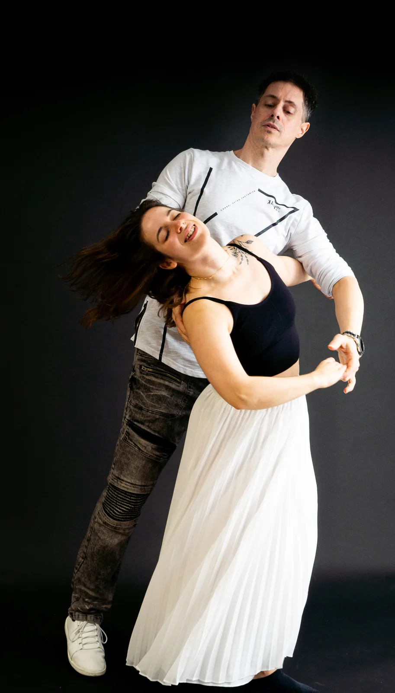

Fondamentaux
Pour apprendre les bases du Zouk brésilien, comprendre la connexion et installer des mouvements confortables dès le départ.
Zouk brésilien à Québec
Découvre une danse de couple fluide, expressive et profondément connectée. Les cours de Zouk brésilien de Pulsation Danse développent les bases, la qualité du mouvement, la musicalité et la communication entre partenaires.

Le style
Le Zouk brésilien est une danse de couple moderne qui met en valeur la fluidité, la connexion, l'écoute et l'expression personnelle. Il permet de développer une qualité de mouvement très riche, autant dans le guidage que dans la réponse.
Les cours de Pulsation Danse travaillent les fondamentaux avec précision: posture, transfert de poids, déplacements, isolations, mouvements du haut du corps et sécurité dans la connexion. L'apprentissage reste progressif, humain et adapté au niveau du groupe.
Pour qui?
Fondamentaux
Pour apprendre les bases du Zouk brésilien, comprendre la connexion et installer des mouvements confortables dès le départ.
Exploration
Pour enrichir la danse, travailler la fluidité, les transitions, les variations et les nuances de guidage.
Connexion
Pour les personnes qui aiment les danses de couple sensibles, expressives et portées par une grande qualité d'écoute.
Horaire et détails
Zouk fondamentaux, pratica et exploration sont offerts le lundi soir.
Studio L'Império, 2323 Avenue Nérée-Tremblay, Québec.
Gaétan Grondin et Loïse Désaulniers enseignent le Zouk brésilien chez Pulsation Danse.
Questions fréquentes
Comme toute danse, il demande de la pratique, mais les fondamentaux sont enseignés progressivement pour développer une base confortable.
Non. Les cours de fondamentaux sont faits pour accueillir les personnes qui débutent ou qui veulent reconstruire leurs bases.
Oui. L'enseignement met beaucoup d'accent sur la technique, la posture, l'écoute du corps et la progressivité.
Prêt à essayer?